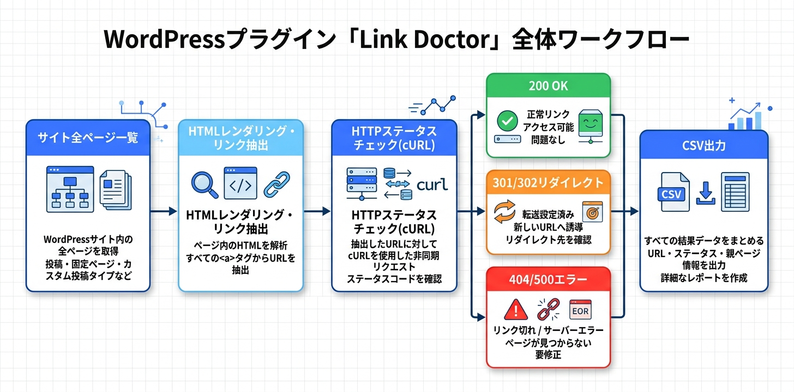

Kashiwazaki SEO Link Doctor マニュアル

WordPressサイト内の全ページをスキャンし、アウトバウンドリンクのHTTPステータスをリアルタイムで検証するリンクチェックツールです。リンク健全性の可視化とCSVエクスポートにより、体系的なリンク監査を実現します。
本プラグインはWordPress管理画面内で動作する管理者向けのリンク監査ツールです。フロントエンド（公開ページ）には一切出力せず、JSON-LDやmetaタグの生成も行いません。サイト内のアウトバウンドリンクの健全性を確認し、リンク切れの早期発見と修正を支援することを目的としています。
主要機能
リンクチェック
サイト全ページのアウトバウンドリンクのHTTPステータスをリアルタイム検証
CSV出力
リンクチェック結果をCSVでエクスポートし外部ツールで分析
リンク可視化
ページごとのリンク健全性をビジュアルに表示

目次
- 概要 - プラグインの概要と主要機能の紹介
- インストール・初期設定 - インストール手順と初期設定の方法
- リンクチェック - リンクチェックの実行とCSVエクスポート
- トラブルシューティング - よくある問題と解決方法
SEO / GEO における強み
本プラグインはJSON-LDやmetaタグの出力は行いませんが、リンク監査を通じて、SEOおよびGEO（Generative Engine Optimization）の改善に役立つ情報を提供します。
リンク切れの検出とSEO影響
リンク切れ（404エラー等）のアウトバウンドリンクは、コンテンツのメンテナンス不足を検索エンジンに示すシグナルとなります。本プラグインでリンク切れを早期に発見・修正することで、サイトの品質維持に貢献します。
クロールバジェットの最適化
リンクチェック機能により、404エラーを返すリンクを特定できます。これらのリンクを修正または削除することで、検索エンジンのクロールバジェットの浪費を防ぎます。
体系的なリンク監査
CSV出力機能により、リンクチェック結果を外部ツール（スプレッドシートやBIツール等）で分析できます。体系的なリンク監査ワークフローの構築を支援します。
GEOへの応用可能性
GEO（Generative Engine Optimization）の観点では、リンク切れはコンテンツの信頼性を低下させ、AI引用の対象から外れるリスクがあります。リンクの健全性を維持することで、AIによるコンテンツの信頼性評価を向上させます。
動作要件
- WordPress 6.0 以上
- PHP 7.4 以上